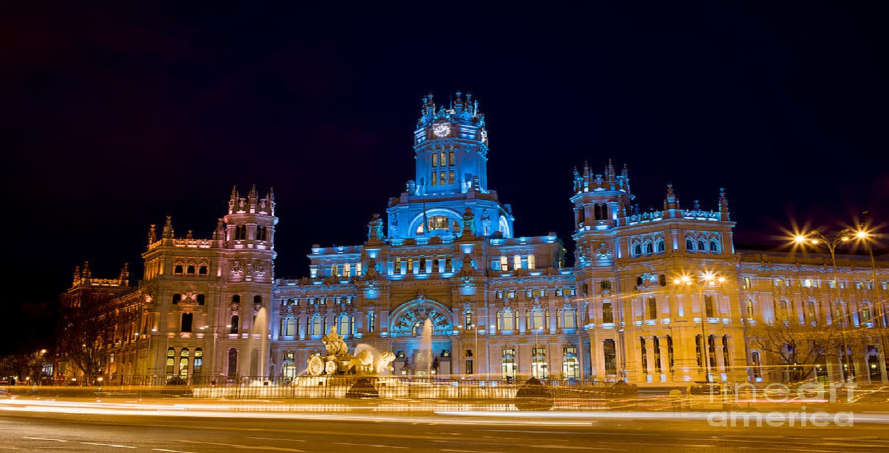
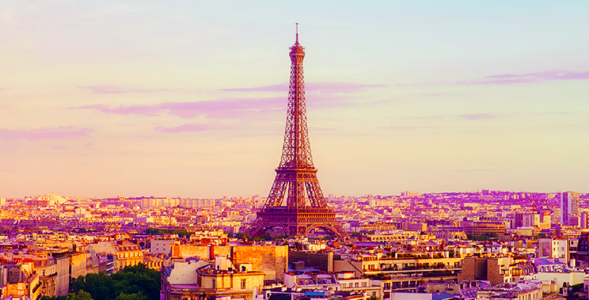
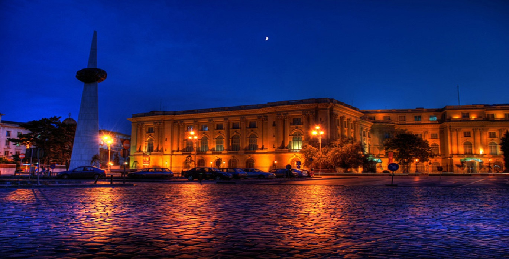

https://awardwallet.com/blog/wp-content/uploads/2016/10/Europe.jpg

https://i.pinimg.com/originals/4b/4f/82/4b4f82e89d0433b2b71feb928a4a6e6f.jpg
Famous Museums in Venice
Museo di Palazzo Mocenigo
Ca'd 'Oro
Panta della Dogana
Museo Leonardo Da Vinci
Oriental Art Museum in Venice
Famous Restraunts in Venice
Ai Mercanti
La Palanca
Impronta Cafe
La Zucca
Cocaeta
Popular Places in Venice
Piazza San Marco
Saint Mark's Basilica
Doge's Palace
Burano
Grand Canal
Kialto Bridge
Leaning Tower of Pisa
Cautions while traveling in Venice
Be alert for pickpocketers
Don't use money exchanges at airports, you will get ripped off.
The national emergency number in Europe is 112

https://i.ytimg.com/vi/Il_OfGOa-Mc/maxresdefault.jpg
Famous Museums in London
Museum of London
British Museum
Victoria and Albert Museum
Tate Modern
Imperial War Museum
Famous Restraunts in London
Boqueria
Restraunt Gordan Ramsay
Green Pea
Fishers
Rules Restraunt
Popular Places in London
Big Ben
London Eye
Buckingham Palace
Tower of London
Hyde Park
River Thames
Cautions while traveling in London
Never leave bagss unattended
Non-urgent crimes number is 101.
The national emergency number in Europe is 112

https://images.fineartamer,ica.com/images-medium-large-5/plaza-de-cibeles-at-night-in-madrid-artur-bogacki.jpg
Madrid
Famous Museums in Madrid
Museo Nacional Del Prado
Caixa Forum Madrid
Museum of Romanticism
Sorolla Museum
Golden Triangle of Arts
Famous Restraunts in Madrid
Sobrinode Botin
Casa Lucio
LHardy
DSTAGE
La Bola
Popular Places in Madrid
Royal Palace of Madrid
Plaza Mayor, Madrid
Temple of Debod
Almudena Cathedral
El Rastro
Cautions while traveling in Madrid
Demonstrations can turn violent
Never leave bagss unattended
The metro is popular for having thieves and pickpocketers.
Loud Noise
The national emergency number in Europe is 112

https://scstylecaster.files.wordpress.com/2015/11/paris-travel-is-it-safe.png?w=916&h=515
Famous Museums in Paris
The Louvre
Musée d'Orsay
Grand Palais
Palace of Versailles
Grand Gallery of Evolution
Famous Restraunts in Paris
Breizh Cafe
Las da Fallafel
Le Cing
Pur-dean-Francois Rouquette
Ze Kitchen Galerie
Popular Places in Paris
Eiffel Tower
Notre-Dome de Paris
Tuileries Garden
Moulin Rouge
Centre Gorges Pompidou
Cautions while traveling in Paris
Pickpocketing is common. Investing in a money belt would be wise
Have travel insurance
Medical Emergencies dial:"15".
Fire Emergencies dial:"18"
Police Emergencies dial:"17"
The national emergency number in Europe is 112

https://studyinromania.files.wordpress.com/2009/05/07_muzeul_national_de_arta.jpg
Famous Museums in Romania
National Museum of Art of Romania
National Museum of Romania History
Ctroceni Palace
Bran Castle
Dimitrie Gusti National Village Museum
Famous Restraunts in Romania
The Artist Restraunt
Sharkia Restraunt
Mica Elveție
caru' cu Bere
Roata
Popular Places in Romania
Peleș Castle
Bâlea Lake
Cișmigiu Gardens
Historic Center of Sighisoara
Tâmpa, Brașov
Cautions while traveling in Romania
Beware of stray dogs
The national emergency number in Europe is 112